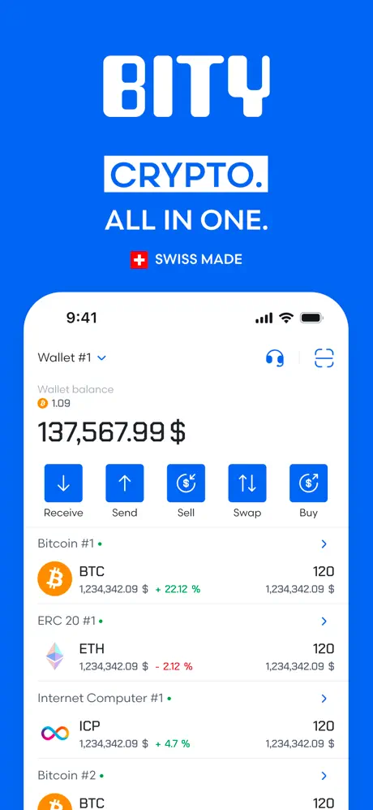

Case Study · Bity Wallet
Mobile architecture designed to survive a complete UI rewrite.
I owned the iOS and Android architecture from product inception while directly implementing the native iOS app. The product had to accommodate real assets, private keys, regulated onboarding, payments and multiple blockchain ecosystems.

The product challenge
Bity Wallet combined concerns that are often separate products: a self-custody wallet, crypto transactions and exchange, Swiss payment flows, identity verification and support for multiple blockchain ecosystems.
On mobile, this meant handling private-key material, long-running financial operations, backend state, blockchain-specific rules and changing KYC requirements in the same application.
Key architectural decision: a native core with replaceable UI
The first version used Flutter, but Flutter was intentionally restricted to the presentation layer. Business logic, wallet logic, blockchain integrations and other core functionality lived in the native layer. Flutter communicated with that native core through platform channels.
The boundary kept product and protocol behavior independent of the UI technology used on each platform.
Product and platform architecture
Self-custody
Wallet creation, recovery and secure handling of sensitive cryptographic material on-device.
Financial flows
Crypto transactions, exchange functionality and Swiss bill-payment experiences involving real assets.
Identity
KYC workflows, document handling and NFC passport scanning inside a regulated onboarding process.
Multi-chain architecture
Integrated Bitcoin, Internet Computer, Ethereum and Arbitrum, including network-specific wallets, tokens, NFTs and ledger operations, without allowing blockchain-specific behavior to dominate the application architecture.
Platform-specific UI
I helped design the product and built its first UI in Flutter. I later implemented the iOS interface in SwiftUI, adapted it to iOS conventions, and supervised the Jetpack Compose implementation on Android.
Testing and preview architecture
I used dependency injection throughout the application so every service had three interchangeable implementations: live, test and preview.
Live
Production implementations connected the application to real backend and blockchain services.
Test
The dependencies of each unit under test were replaced with deterministic implementations covering successes, failures and edge cases.
Preview
Offline implementations returned representative fake data without connecting to the internet. They powered SwiftUI previews directly inside Xcode.
The entire application could run in preview mode. Individual components and complete screens could be exercised without building the app or connecting to live services.
What the architecture enabled
When the iOS application moved to a fully native SwiftUI interface, the presentation layer was replaced while the core logic remained unchanged. Instead of a risky full rewrite, the migration became a controlled replacement of one architectural layer.
The live, test and preview implementations greatly accelerated development and regression testing. Most work used deterministic local implementations; the backend was reserved mainly for live integration testing.
Builds, tests and releases were automated through GitLab CI/CD pipelines.
Scope of ownership
My responsibility extended from technical direction and core-system design to SwiftUI implementation and coordination of native UI delivery on Android. It also covered testing strategy, CI/CD, App Store releases, production incidents, and integration decisions spanning backend and blockchain services.
Product lifecycle
Bity later discontinued its retail wallet and exchange offering, so the current app no longer represents the product developed during this period. Its App Store history documents the native interface, KYC, NFC passport scanning, multi-chain support and other production releases.